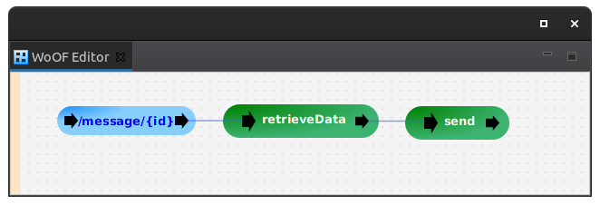

This tutorial demonstrates using Vertx SQL Client logic within WoOF.
It is a simple application to retrieve data from a database. As such, the configuration for this tutorial is the following:
To have the Vertx SQL Client available, add the following:
<dependency> <groupId>net.officefloor.persistence</groupId> <artifactId>officevertx_sqlclient</artifactId> </dependency> <!-- Also include appropriate library for particular database --> <dependency> <groupId>io.vertx</groupId> <artifactId>vertx-pg-client</artifactId> </dependency>
then configure as follows in application.objects:
<managed-object source="net.officefloor.vertx.sqlclient.VertxSqlPoolManagedObjectSource"> <property-file path="datasource.properties" /> </managed-object>
with example properties:
host=localhost port=5433 database=test username=sa password=password
The following is the Vertx logic to retrieve the data:
public Future<Message> retrieveData(@HttpPathParameter("id") String id, Pool pool) {
return pool.withConnection((connection) -> connection.preparedQuery("SELECT CONTENT FROM MESSAGE WHERE ID = $1")
.execute(Tuple.of(Integer.parseInt(id))).map((rowSet) -> rowSet.iterator().next().getString(0))
.map((content) -> new Message(content)));
}
Having registered the Vertx SQL Client, the returned Vertx Future is handled natively by OfficeFloor.
OfficeFloor will complete to the returned Future. The success is passed as parameter to the next procedure (sending it as response):
public void send(@Parameter Message message, ObjectResponse<Message> response) {
response.send(message);
}
The following shows invoking the Vertx SQL Client code that asynchronously retrieves data:
@RegisterExtension
public static final PostgreSqlExtension database = new PostgreSqlExtension(
new Configuration().port(5433).database("test").username("sa").password("password"));
@RegisterExtension
public final MockWoofServerExtension server = new MockWoofServerExtension();
@Test
public void getData() {
MockWoofResponse response = this.server.send(MockWoofServer.mockRequest("/message/1"));
response.assertJson(200, new Message("TEST"));
}
The next tutorial covers using Cats Effect.